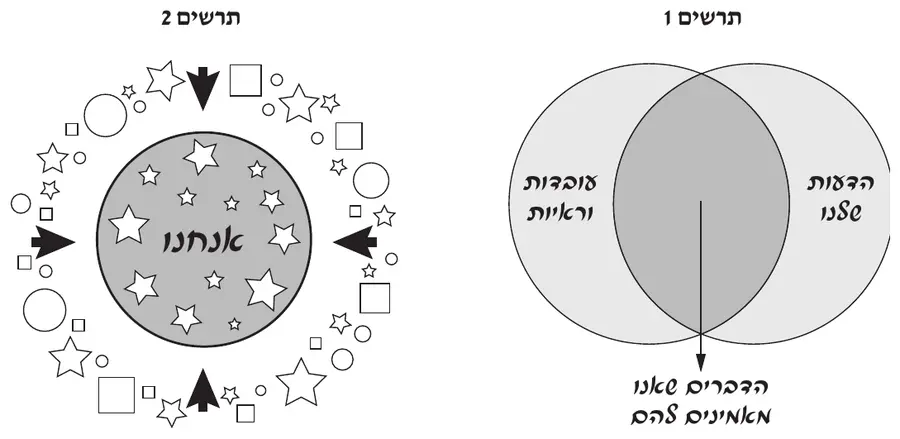
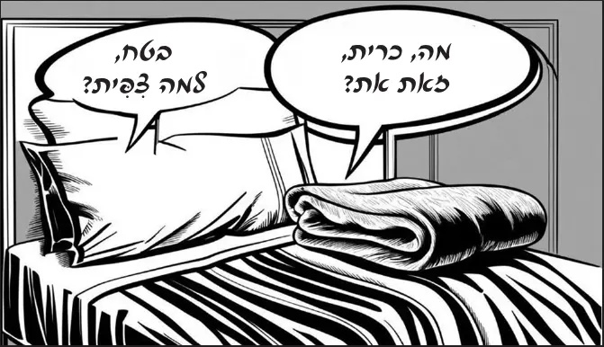

הבנה והבעה
קראו את שלושת המאמרים שלפניכם, וענו על השאלות 1–4 שאחריהם.
הקפידו על כתב ברור, על כתיב נכון, על כללי הדקדוק ועל פיסוק הגיוני. ענו במשפטים מלאים, במילים שלכם (אלא אם כתוב "העתיקו" או "צטטו").
המאמרים והשאלות לקוחים מבחינת הבגרות בעברית של קיץ תשפ"ה. מטלת הכתיבה (הסקירה) לא נכללה במבחן הזה.
שלושת המאמרים
מאמר 1 חשיבה ביקורתית בעת משבר
מאת תום ביאליק(1)
פסקה אנראה שבעת האחרונה עקב האירועים הקשים שנחשפנו אליהם, כולנו צורכים ביתר שֹאת מידע מערוצי התקשורת ומן המדיה החברתית. המידע הרב שאנו נחשפים אליו מגיע אלינו ממקורות שונים – חלקם מהימנים וחלקם אינם מהימנים דיים. לעיתים המידע מניפולטיבי ואפילו שקרי. הבעיה היא שבמקרים רבים אנו ממהרים לשתף מידע זה ברשתות החברתיות בלי שבדקנו לפני כן אם הוא מהימן.
פסקה בלפיכך ברצוני להציג כאן כמה דוגמאות של הטיות מחשבתיות ואפקטים פסיכולוגיים וחברתיים, המשפיעים על היכולת שלנו לשפוט את המידע שאנו נחשפים אליו. ההטיות המחשבתיות הן למעשה הטיות שיטתיות בדפוסי החשיבה והשיפוט של בני האדם. אם נכיר את ההשפעות האלה, נוכל לבחון את הדברים באופן שקול יותר ולהימנע מהפצת מידע שגוי.
פסקה גאחד האפקטים המשפיעים על יכולת השיפוט שלנו, בעיקר מאז השתלטו הרשתות החברתיות על חיינו, הוא "אפקט תיבת תהודה". הכוונה במונח זה היא שבסביבה שאנו נמצאים בה, אנו נחשפים בעיקר למידע התומך בעמדותינו. מצב זה מגביר את תחושתנו שכולם חושבים כמונו ושאיש אינו מחזיק בדעות שונות. האלגוריתמים של הרשתות החברתיות מיועדים להגביר את אפקט תיבת התהודה. הם "לומדים" את עמדותינו והעדפותינו לפי התכנים שאנו צופים בהם, השיתופים, ה"לייקים" שאנו מסמנים והפרופילים שאנו עוקבים אחריהם. בעקבות למידה זו מוצגים לנו ברשתות החברתיות פוסטים, סרטונים וכתבות בהתאם לתכנים שסימַנו ושיתפנו בעבר.
פסקה דהטיה שמשפיעה עלינו מאוד מכונה "הטיית האישוש". הטיה זו מתבטאת בנטייה שלנו לחפש, להעדיף ולזכור מידע התומך בעמדותינו, להתעלם ממידע המנוגד להן או לפסול מידע זה. כולנו מושפעים מהטיה זו בלי קשר לדעה הפוליטית, לרמת ההשכלה או למעמד החברתי. הטיה זו גורמת לנו להסכים באופן מיידי, ובלי להטיל ספק, עם כל פוסט או ידיעה המשקפים את עמדותינו, ולפסול ידיעות המנוגדות לעמדותינו בטענה שהן שקריות, לא מהימנות ולא מבוססות.
פסקה העוד אפקט שעשוי להשפיע על השיפוט שלנו הוא "אפקט אשליית האמת". הכוונה באפקט זה היא שאנחנו מאמינים שמידע מסוים הוא נכון ואמיתי, אם שמענו אותו נאמר פעמים רבות. אנשי פרסום ושיווק למשל מנצלים אפקט זה – הם חוזרים על מסרים באמצעות זמרירים (ג'ינגלים) וסיסמאות (סלוגנים) המושמעים שוב ושוב בפרסומות ומשפיעים על הצרכנים.
פסקה וכדי להתמודד עם השפעת ההטיות והאפקטים הללו עלינו, מומלץ קודם כול לבדוק את המידע לפני שמשתפים אותו. כדאי להתייעץ בנוגע לאמיתוּת המידע עם אנשים קרובים שאתם סומכים עליהם, ולבדוק אם המידע נכון באתרים של בדיקת עובדות או באתרי חדשות מהימנים. במקרים רבים יתברר שהמידע כוזב, וההימנעות משיתופו תצמצם את הפצתו.
פסקה זעל אפקט תיבת התהודה אפשר להתגבר באמצעות חיפוש יזום של תכנים המשקפים דעות השונות מדעותיכם, וכן באמצעות מעקב ברשתות החברתיות אחר אנשים שעמדותיהם מנוגדות לשלכם. ייתכן שזה נשמע מוזר, אבל זו הדרך הטובה ביותר להיחשף לעמדות שונות ולהימנע מן ההנחה המוטעית שהדעות של כולם הן כמו שלנו. אין זה אומר שאנחנו צריכים להסכים עם דעות אחרות או לאמץ אותן, אך בדרך זו נוכל לבחון בביקורתיות את העמדות שלנו.
פסקה חנוסף לכך, אפשר ליישם את העיקרון של "השעיית השיפוט". לפי עיקרון חשוב זה מתחום החשיבה הביקורתית, עלינו לדחות ככל האפשר את גיבוש הדעה שלנו, כדי שנוכל לחקור את הנושא לעומק באובייקטיביות. חשוב שלא למהר לגבש דעה ולא להסיק מסקנות לפני שלומדים את הנושא. לא קל ליישם את עקרון השעיית השיפוט. החיים כיום מהירים ודינמיים. אנו נחשפים בכל זמן לעוד ועוד מידע וחושבים שאנו חייבים מייד לגבש עמדה בכל נושא.
פסקה טאומנם לרוב איננו יכולים לשנות את המציאות שסביבנו, אך עלינו להיות מודעים להשפעת ההטיות והאפקטים האלה עלינו, כשאנו צורכים מידע בערוצי התקשורת וברשתות החברתיות. עלינו להיות ביקורתיים וזהירים יותר כאשר אנו פועלים במרחב הציבורי ומביעים את עמדותינו.
* מעובד על פי ביאליק, ת' (פברואר 2024). חשיבה ביקורתית בעת משבר. זמן ישראל. אוחזר מ־zman.co.il.
(1) ד"ר תום ביאליק הוא מרצה בכיר במכללה האקדמית בית ברל. מחקריו מתמקדים בין השאר בקידום עקרונות של חשיבה ביקורתית ומדעית.
מאמר 2 איך עובדים עלינו?
מאת יונת אשחר
פסקה אבמחקר שנערך בארצות הברית בדקו חוקרים אלפי מסרים שהופצו בטוויטר(1). החוקרים מיינו את המסרים לידיעות אמיתיות ולידיעות מזויפות. הם מצאו שהידיעות המזויפות התפשטו מהר יותר ובתפוצה רחבה יותר בהשוואה לאמיתיות. מדוע אנו מאמינים לידיעות שקריות? מדוע קשה לנו להבחין שהן מומצאות? חוקרים רבים טוענים שהסיבה לכך היא שהתפיסות המוקדמות שלנו משפיעות על השיפוט שלנו.
פסקה ב"הטיית האישוש" היא הנטייה שלנו לשים לב ולהאמין לידיעות ולסיפורים שתומכים בעמדותינו, ולהתעלם מפרטים שאינם תואמים את דעותינו.
פסקה גהטיה נוספת המשפיעה על הדרך שבה אנו מגבשים דעה על ידיעה, היא "שבטיוּת" – אנו נוטים למיין אנשים ל"אנחנו" ול"הם", ולסמוך יותר על מידע שמקורו בחברים, בבני משפחה או באנשים שהשקפות העולם שלהם דומות לשלנו. לפי דבריו של החוקר דן קהאן, אנחנו מאמינים למידע בנושא שנוי במחלוקת, אם הוא מחזק את הקשר שלנו לאנשים שאנחנו מזדהים עם הערכים שלהם, ואיננו מאמינים למידע אשר מחליש קשר זה.
פסקה דכיצד אנו יכולים להיחלץ מן המצב הזה שבו אנו שמים לב, מקשיבים ומאמינים רק למידע שמקורו בקבוצה שלנו או תואם את תפיסותינו? קהאן סבור כי הדרך להיחלץ ממצב זה היא לפתח סקרנות. לדבריו, אנשים שרמת הסקרנות שלהם גבוהה, מעדיפים לחקור ולבדוק מידע חדש, גם אם יגלו בעקבות זאת שעמדת הקבוצה שהם משתייכים אליה שגויה. לפיכך הוא מציע להתמקד בטיפוח הסקרנות בקרב הציבור, שאם לא כן כל ניסיון להעביר מידע חשוב, כמו סכנת שינויי האקלים, נידון לכישלון.
פסקה הלא כולם מסכימים עם קהאן. החוקר דיוויד ראנד טוען כי הבעיה העיקרית אינה דווקא הטיות מחשבתיות והיצמדות לערכי השבט, אלא עצלנות מנטלית. לטענתו, אנחנו לא משקיעים מספיק מאמץ בחשיבה על המידע שאנחנו צורכים. לכן חשוב לפתח חשיבה ביקורתית. ראנד מצא כי אנשים בעלי יכולות חשיבה גבוהות טובים יותר באיתור ידיעות מזויפות, גם כשהן תואמות את עמדותיהם.
פסקה וגם אם יש מחלוקות בין החוקרים בנוגע למה שגורם לאנשים להאמין ל"פייק ניוז"(2) ולדרך להתגבר על בעיה זו, נראה שכולם מסכימים כי הרשתות החברתיות מזיקות. הרשתות החברתיות משלות אותנו שאנו מחוברים למגוון אנשים, דעות והשקפות עולם, אך למעשה ברוב המקרים הפוסטים המוצגים לנו מבטאים רק חתך קטן של דעות מסוימות הדומות לשלנו.
פסקה זרוב הזמן אנו נמצאים ב"תיבת תהודה" – סביבה שמהדהדת לנו את ההשקפות שאנחנו כבר מחזיקים בהן. יתרה מזו, רשתות חברתיות כמו פייסבוק מציגות לנו ידיעות בנושאים שקרובים לליבנו, והידיעות האלה משפיעות עלינו ומחזקות את עמדותינו. מאחר שאנחנו כמעט שלא נחשפים למידע שנוגד את הערכים שלנו, הסובלנות שלנו למידע כזה מועטה, ואנחנו אפילו לא מנסים לבחון אותו ולאתגר את הדעות שלנו.
פסקה חאולם האשמה אינה מוטלת רק על הרשתות החברתיות אלא גם עלינו המשתמשים. משום שבסופו של דבר כאשר אנו קוראים ידיעה, אנו אלה שצריכים להחליט אם היא אמיתית או לא.
פסקה טעצה טובה היא לברר פרטים כגון מהו מקור הידיעה, מי כתב אותה, ומתי היא פורסמה לראשונה. עצה טובה נוספת היא לבדוק אם הידיעה פורסמה במקומות נוספים. דיווח אמיתי על מותו של שחקן מפורסם, למשל, יופיע לא רק באתר חדשות אחד. יש גם אתרים ייעודיים שבהם אפשר לבדוק אם ידיעה מסוימת היא אמיתית או שקרית.
פסקה יאבל אולי העצה החשובה ביותר היא להכיר בהטיות המחשבתיות שלנו ולהימנע מליפול בפח בגללן. כדאי לבדוק היטב לא רק ידיעות שקשה לנו מאוד להאמין להן, אלא דווקא ידיעות שאנחנו מאמינים להן בקלות – כאלה שמתיישבות עם מה שחשבנו מלכתחילה – ולגלות סקרנות. וזה לא קל: פירושו של דבר הוא לפעול גם נגד ההטיות שלנו וגם נגד העצלנות המנטלית המובנית אצל כולנו. אבל אם אנחנו באמת רוצים לפתח בנו את הכשירות הזאת, הדרך היחידה היא לא להיות עצלנים.
* מעובד על פי אשחר, י' (מרץ 2019). איך עובדים עלינו? מכון דוידסון. אוחזר מ־davidson.weizmann.ac.il.
(1) כיום שם הרשת החברתית טוויטר הוא X.
(2) פייק ניוז – חדשות כזב.
מאמר 3 שקרים בתפוצה רחבה
מאת טל סוקולוב
פסקה ארבים נחשפים למבזקי חדשות ברשתות החברתיות וסופגים ידע כללי מרחבי האינטרנט. מאחר שכיום המידע נגיש יותר מאי פעם, אין צורך להמתין לדיווחי החדשות, ומי שרוצה ללמוד נושא מסוים כבר אינו חייב לבקר בספרייה או לפנות למומחים. כל מה שאנו מחפשים נמצא במרחק של כמה הקשות במקלדת.
פסקה בגם הפצת המידע נעשתה זמינה הרבה יותר. אין צורך לצבור קרדיט אקדמי או לקבל גושפנקה(1) ראויה אחרת כדי ללכוד במהירות ברשתות החברתיות קהל של עשרות או מאות עוקבים ואפילו מיליונים, במיוחד אם מי שמפרסם את המידע הוא אושיית רשת.
פסקה גהרשתות החברתיות ממלאות תפקיד מרכזי בהפצת מידע שקרי. משתמשים שמעוניינים להתפרסם, מפרסמים תכנים שנויים במחלוקת המעוררים רגשות עזים וזוכים להפצה מהירה ולתפוצה רחבה. מצב זה שבו תוכן שמקורותיו אינם בהכרח מהימנים מופץ בקלות, עלול להקשות עלינו מאוד בבואנו לשפוט אם המידע אמין.
פסקה דהפצת שקרים היא לא דבר חדש. מאז ומעולם התפשט מידע מעוות, אולם מה שמייחד את הפצת השקרים בימינו הוא מהירות ההפצה והיקפה. בשנים האחרונות נעשה מאתגר אפילו יותר להבחין בין אמת לבדיה, בייחוד עם התפתחות הבינה המלאכותית היוצרת. באמצעות כלי הבינה המלאכותית כמו ChatGPT ו־ DALL-Eיכול כל משתמש להפיק תמונות, טקסטים וקובצי וידאו שנראים אמיתיים, ויכולים לתעתע בקלות בצופה.
פסקה ההקלות שבה נוצר תוכן פיקטיבי, מהירות ההפצה שלו והגעתו ישירות לטלפון הנייד שלנו – כל אלה חושפים אותנו למידע שקרי יותר מאי פעם. קשה מאוד לדעת אם מידע שמגיע אלינו הוא אמיתי וקשה למנוע הפצה של מידע שקרי. הרשתות החברתיות, שבהן אנחנו מתקשרים עם חברים ועם משתמשים שדומים לנו, יוצרות מעין "תיבת תהודה": אנחנו נחשפים לתוכן שמלכתחילה תואם את דעותינו ואת תפיסות העולם שלנו, ולכן התגובה שלנו עליו היא לעיתים פסיבית וחפה מביקורתיות.
פסקה וטוב נעשה אם ננקוט צעדים אחראיים ושקולים כמו להטיל ספק, להתעמק בתוכן, ובעיקר לא ללחוץ על כפתור השיתוף בלהט הרגע בלי לבדוק את אמיתות המידע שאנו מתכוונים להפיץ.
* מעובד על פי סוקולוב, ט' (פברואר 2024). שקרים בתפוצה רחבה. מכון דוידסון. אוחזר מ־davidson.weizmann.ac.il.
(1) גושפנקה – אישור רשמי המציין את חוקיותם, נכונותם ותקפותם של נוהל, מסמך או דרך התנהגות.
שני תרשימים
לפניכם שני תרשימים. אחד מהם מתאר את "אפקט תיבת התהודה" והאחר – את "הטיית האישוש", המוזכרים במאמרים.

א. (6 נקודות)
ציינו איזה מן התרשימים מתאר את "אפקט תיבת התהודה" ואיזה מהם את "הטיית האישוש".
תרשים 1:
תרשים 2:
🗝️ למורה: לפי הבנתי: תרשים 1 – הטיית האישוש (מכל העובדות אנו מאמינים רק לאלה שתואמות את הדעות שלנו – החיתוך בין העיגולים). תרשים 2 – תיבת התהודה (אנחנו מוקפים רק במידע שדומה לנו – הכוכבים – והמידע השונה נשאר בחוץ). שימו לב: בפתרון של "יואל גבע" מופיע ההפך (תרשים 1 – תיבת תהודה, תרשים 2 – הטיית האישוש). כדאי להחליט מה מקבלים.
ב. (6 נקודות)
בחרו באחד מן התרשימים, והסבירו כיצד בתרשים באים לידי ביטוי ההטיה או האפקט שציינתם.
מספרו של התרשים שבחרתם:
ג. (4 נקודות)
מהי ההשפעה המשותפת של "הטיית האישוש" ושל "אפקט תיבת התהודה" על היכולת שלנו לשפוט מידע? בחרו את התשובה הנכונה.
מחלוקת בין חוקרים
במאמר 2 מתוארת מחלוקת בין חוקרים בנוגע לסיבות שבגללן אנו מאמינים למידע מסוים ולא למידע אחר.
מהי המחלוקת? כתבו עד שני משפטים. נסחו את תשובתכם באמצעות השוואה.
טענה רווחת והסתייגות
במאמר 2 בפסקות ו–ח הכותבת מציינת טענה רווחת ומסתייגת ממנה.
א. (5 נקודות)
כתבו את הטענה הרווחת.
ב. (5 נקודות)
כתבו את ההסתייגות של הכותבת מטענה זו.
גורם נוסף
במאמרים 1 ו־2 מוצגים גורמים המקשים על יכולת השיפוט שלנו בנוגע למידע שאנו נחשפים אליו.
כותבת מאמר 3 מעלה גורם נוסף. מהו גורם זה, וכיצד הוא מקשה על שיפוט המידע?
מערכת הצורות
בחלק זה חמש שאלות, 12 נקודות לכל שאלה. ענו על כל השאלות ועל כל הסעיפים.
השאלות לקוחות מבחינות הבגרות בעברית (שאלון 11281) של קיץ תשפ"ד, חורף תשפ"ה וקיץ תשפ"ה, בנושאים שלמדנו: שורש, בניין וגזרה, פעיל וסביל, זמן וגוף, שם הפועל ושם הפעולה. שורש כותבים עם נקודות או בלי (למשל: כ.ת.ב או כתב). בשורש של נחי ל"י/ה אפשר לכתוב "עני/ה".
שורש ובניין
מתוך: בגרות קיץ תשפ"ה (2025), שאלה 12
א. (8 נקודות)
לפניכם קטע ובו פעלים מודגשים.
יש אנשים שמשתמשים ברשתות החברתיות כדי לְהִשְׁתַּעֲשֵׁעַ, ואחרים כדי לקבל חשיפה רחבה. הם מפרסמים תכנים שמְעוֹרְרִים רגש, אך לא תמיד הם אמינים. הפצה מהירה של ידיעות המֻמְצָאוֹת לצורך פרסום והמוּצָאוֹת מהקשרן עלולה לְהַקְשׁוֹת עלינו לשפוט את אמינות המידע, ולכן עלינו להיות זהירים וביקורתיים יותר בנוגע לדעות שאנו מַבִּיעִים.
בטבלה שלפניכם נתחו את הפעלים המודגשים בקטע – ציינו את השורש ואת הבניין של כל פועל.
| הפועל | השורש | הבניין |
|---|---|---|
| לְהִשְׁתַּעֲשֵׁעַ | ||
| מְעוֹרְרִים | ||
| מֻמְצָאוֹת | ||
| מוּצָאוֹת | ||
| לְהַקְשׁוֹת | ||
| מַבִּיעִים |
ב. (4 נקודות)
לפניכם שישה משפטים ובכל אחד מהם פועל מודגש. מיינו את ששת הפעלים המודגשים על פי הבניין: בחרו ליד כל משפט – קל או נפעל.
| המשפט | הבניין |
|---|---|
| כולנו נִזּוֹנִים מן המידע שבערוצי התקשורת. | |
| השפעה נוספת שאנו נְתוּנִים לה היא הטיית האישוש. | |
| אנו נוֹטִים לצרוך מידע התומך בעמדותינו. | |
| מידע התואם את עמדותינו יֵרָאֶה לנו אמין יותר. | |
| לבינה המלאכותית נוֹסָפוֹת יכולות כל הזמן. | |
| טוב נעשה אם נִבְחַר בצד האחראי והשקול. |
הנחיות להקשבה
מתוך: בגרות חורף תשפ"ה (2025), שאלה 12
לפניכם קטע ובו פעלים מודגשים.
להלן הנחיות ועקרונות להקשבה מיטיבה:
- רִכְשׁוּ מיומנויות המשקפות לדובר שדבריו הוּבְנוּ.
- נַסּוּ ליצור קשר עין והֵאָזְרוּ בסבלנות עד שהדובר יסיים את דבריו.
- הַבִּיעוּ רגישות לדברים הנאמרים, ושַׁקְּפוּ את הדברים כדי לְוַדֵּא שהם הובנו.
- אי אפשר להיות נוֹכְחִים באמת ולהקשיב ובו בזמן להתעסק בטלפון נייד.
- אם מישהו מספר לכם על הכאב שלו, אל תִּזְדַּהוּ עימו יותר מדי – אל תספרו על הכאב שלכם – כי במקום להתמקד בכאב שלו, אתם מַטִּים את השיחה אליכם.
- בדיוק כפי שאתם מקצים זמן לספורט או לקריאה, הַקְצוּ זמן לתרגול הקשבה.
א. (7 נקודות)
לפניכם טבלה, ובה שבעה מן הפעלים המודגשים בקטע. בטבלה נתחו את הפעלים – ציינו את השורש ואת הבניין של כל פועל.
| הפועל | השורש | הבניין |
|---|---|---|
| הוּבְנוּ | ||
| הֵאָזְרוּ | ||
| לְוַדֵּא | ||
| נוֹכְחִים | ||
| תִּזְדַּהוּ | ||
| מַטִּים | ||
| הַקְצוּ |
ב. (2 נקודות)
ציינו את הזמן (הדרך) המשותף לפעלים שלפניכם, על פי הקשרם בקטע.
רִכְשׁוּ, נַסּוּ, הֵאָזְרוּ, הַבִּיעוּ, שַׁקְּפוּ, הַקְצוּ
הזמן (הדרך):
ג. (3 נקודות)
לפניכם רשימת מילים:
הַתְנָיָה, נְתוּנִים, מַתָּנָה, הַמְתָּנָה, לָתֵת, תְּלוּנָה
(1) מבין המילים שברשימה, כתבו שלוש מילים הגזורות מאותו השורש.
(2) ציינו את השורש המשותף למילים שכתבתם.
השורש:
🗝️ למורה: שלוש המילים: נְתוּנִים, מַתָּנָה, לָתֵת – השורש נ.ת.נ. (התניה – ת.נ.י/ה; המתנה – מ.ת.נ; תלונה – ל.ו.נ / ת.ל.נ.) הבדיקה האוטומטית מקבלת כל אחת משלוש המילים בכל שדה – בדקו שלא נכתבה אותה מילה פעמיים.
צִפִּית, לִצְפּוֹת ולְצַפּוֹת
מתוך: בגרות קיץ תשפ"ה (2025), שאלה 13 (סעיף א – חלק הפועל בלבד)
א. (4 נקודות)
לפניכם בדיחה משעשעת.

המילה צִפִּית בבדיחה היא דו־משמעית, ומשמשת בו בזמן בשני חלקי דיבור שונים: פועל ושם עצם. נתחו את המילה כפועל על פי ההנחיות.
השורש:
הבניין:
הזמן:
הגוף:
ב. (4 נקודות)
לפניכם טבלה ובה משפטים שבהם שם פועל מודגש. מתחת לטבלה יש רשימת מילים. השלימו את הטבלה: ציינו את הבניין של כל שם פועל, והעתיקו לכל שם פועל מילה מן הרשימה – הגזורה מאותו השורש ויש לה אותה המשמעות.
| שם הפועל | הבניין | מילה מן הרשימה – מאותו השורש ובאותה המשמעות |
|---|---|---|
| אנו נהנים לִצְפּוֹת בסרטונים ברשת. | ||
| רצוי לְצַפּוֹת לתגובה. |
רשימת המילים: הֲצָפָה, מִצְפֶּה, צִפִּיָּה, מָצוֹף
ג. (4 נקודות)
מתוך רשימת המילים שבסעיף ב העתיקו שתי מילים הגזורות מן השורש צ־ו־ף.
🗝️ למורה: הֲצָפָה, מָצוֹף. (מִצְפֶּה וצִפִּיָּה – צ.פ.י/ה.) מן הרשימה המקורית הורדתי את "צְפִיפוּת" (צ.פ.פ – גזרת הכפולים).
פעיל וסביל
א. (4 נקודות)
מתוך: בגרות קיץ תשפ"ה (2025), שאלה 13ד
לפניכם שני משפטים ובהם פעלים מודגשים.
- ה"פוסטים" הנִקְרָאִים ביותר מוֹכִיחִים כי רוב הזמן המשתמשים נמצאים ב"תיבת תהודה".
- הניסיון להעביר מידע חשוב נִדּוֹן לכישלון.
ציינו ליד כל פועל סביל את צורת הפעיל שלו, וליד כל פועל פעיל את צורת הסביל שלו; שמרו על הגוף והזמן של כל פועל.
נִקְרָאִים ←
מוֹכִיחִים ←
נִדּוֹן ←
ב. (5 נקודות)
מתוך: בגרות קיץ תשפ"ד (2024), שאלה 14ג
לפניכם קטע, ובו פעלים סבילים.
בתקופת המלחמה אנשים רבים ביקשו להתנדב. אין־ספור התארגנויות חברתיות הוקמו בן לילה, וקהילות שלמות נולדו בן רגע. בחברה שיש בה סולידריות יִמָּצְאוּ שיעורים גבוהים של התנדבות. קבוצות ששואפות ליצור בתוכָן לכידות, יוזמות פעולות שמכוונות לטובת הציבור ובאות לידי ביטוי בעזרה לזולת.
העתיקו מן הקטע ארבעה פעלים סבילים, וציינו ליד כל פועל סביל את הבניין שלו.
| הפועל הסביל | הבניין |
|---|---|
🗝️ למורה: הוּקְמוּ – הופעל; נוֹלְדוּ – נפעל; יִמָּצְאוּ – נפעל; (ש)מְכֻוָּנוֹת – פועל. הבדיקה האוטומטית מקבלת כל אחד מארבעת הפעלים וכל אחד משלושת הבניינים בכל שורה – בדקו שהבניין מתאים לפועל שנכתב לידו.
ג. (3 נקודות)
מתוך: בגרות חורף תשפ"ה (2025), שאלה 15א(2)
לפניכם משפט, ובו מילים מודגשות.
התחושה שלמילים שלכם יש משמעות, גורמת לכם להרגיש שאתם אנשים מֻעֲרָכִים, מוּבָנִים, אֲהוּדִים ומוּכָלִים.
לפניכם שתיים מן המילים המודגשות. כתבו את צורת הפעיל של כל אחת מהן (שמרו על אותו הגוף והזמן).
אֲהוּדִים ←
מוּכָלִים ←
שם הפעולה
א. (5 נקודות)
מתוך: בגרות קיץ תשפ"ה (2025), שאלה 16א(1)
לפניכם רשימה של צירופי מילים.
- דֵּעָה נְפוֹצָה
- הַטָּיַת חֲשִׁיבָה
- אֲתַר יִעוּדִי
- תְּגוּבָה תַּקִּיפָה
- הִמָּנְעוּת מִשִּׁתּוּף
(1) העתיקו את שני הצירופים שבכל אחד מהם שתי המילים הן שמות פעולה.
(2) ציינו את הבניין של כל שם פעולה בצירופים שהעתקתם.
| שם הפעולה | הבניין |
|---|---|
🗝️ למורה: הַטָּיַת (הַטָּיָה) – הפעיל; חֲשִׁיבָה – קל; הִמָּנְעוּת – נפעל; שִׁתּוּף – פיעל. הבדיקה האוטומטית לא בודקת את ההתאמה בין שם הפעולה לבניין – בדקו אותה.
ב. (4 נקודות)
מתוך: בגרות קיץ תשפ"ה (2025), שאלה 16ב
לפניכם שני משפטים ובכל אחד מהם המילה "ארגון" מודגשת.
- אחת ההמלצות בכתיבת סקירה היא אִרְגּוּן המידע בתוך טבלה.
- פניתי לאִרְגּוּן העובדים כדי לבדוק את תנאי ההעסקה שלי.
(1) המילה "ארגון" נוטה במשקל שם פעולה, אך רק באחד מן המשפטים היא מבטאת פעולה. באיזה משפט?
(2) ציינו את השורש ואת הבניין של המילה אִרְגּוּן.
השורש:
הבניין:
ג. (3 נקודות)
מתוך: בגרות חורף תשפ"ה (2025), שאלה 16א
לפניכם משפט, ובו שם פעולה מודגש.
לא כל שיחה היא הזדמנות לקידום עצמי או לְאִזְכּוּר הישגים.
(1) השורש של שם הפעולה:
(2) הבניין של שם הפעולה:
🗝️ למורה: אִזְכּוּר – מן הפועל אִזְכֵּר, שורש מרובע א.ז.כ.ר (שורש תנייני, נגזר מ"אַזְכָּרָה"), בניין פיעל. כך גם בפתרון של "יואל גבע" לחורף תשפ"ה. אם תלמיד כתב ז.כ.ר – החליטו אם לקבל.